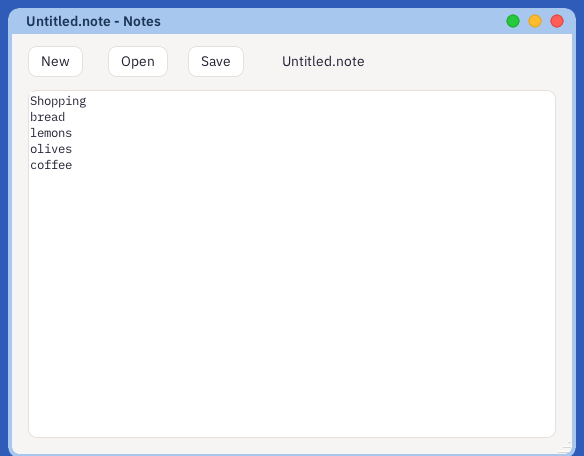
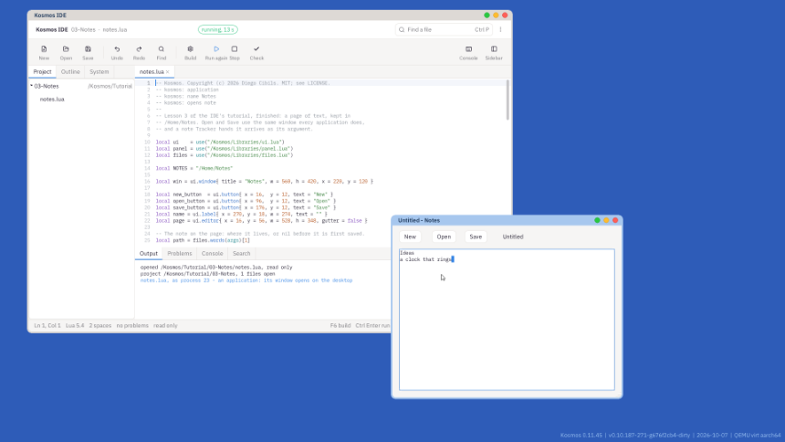

A page of text that is still there tomorrow. On the way: reading and writing a file, the Open and Save window every application shares, and a note that Tracker hands to your program when somebody opens it.

What you will have at the end of this lesson.
New, New Project, Lua app, the Hello Window template, and the name Notes. Delete everything after the line that uses the UI kit, and add two more kits under it:
local panel = use("/Kosmos/Libraries/panel.lua")
local files = use("/Kosmos/Libraries/files.lua")
panel is the Open and Save window; files knows how to take a path apart.
local new_button = ui.button{ x = 16, y = 12, text = "New" }
local open_button = ui.button{ x = 96, y = 12, text = "Open" }
local save_button = ui.button{ x = 176, y = 12, text = "Save" }
local name = ui.label{ x = 270, y = 18, w = 274, text = "" }
local page = ui.editor{ x = 16, y = 56, w = 528, h = 348, gutter = false }
An editor is the same control the IDE writes code in. gutter = false leaves out the line numbers, which a note has no use for.
local function open(chosen)
local body, why = fs.read(chosen)
if type(body) ~= "string" then
name.text = "could not open: " .. tostring(why)
win.dirty = true
return
end
path = chosen
page:set(body)
page:saved()
show_name()
end
local function write()
local ok, why = fs.write(path, page:content())
if ok then
page:saved()
else
name.text = "could not save: " .. tostring(why)
end
show_name()
end
fs.read gives back the file's bytes, or nothing and the reason. fs.write replaces the file with what it is given. Both answer with the reason when they cannot, and the program shows it rather than pretending: a full disk, or a folder that was never made, is something a person can do something about.
A program can only reach the files its namespace holds. Notes was given /Home when it started, as every application is; it was never given the system's own files to change.
local function save()
if path then return write() end
if not fs.getattr(NOTES) then fs.send(NOTES, { type = "mkdir" }) end
local chooser = panel.save{ start = NOTES, name = "Untitled.note",
on_choose = function(chosen) path = chosen; write() end }
if chooser then chooser:run() end
end
The first save asks where; every one after writes where it was. panel.save opens the same window Text Editor and Paint use, with Tracker's places down its side, and calls on_choose with the whole path - or not at all, if the person chose Cancel. It is a window of its own, and chooser:run() answers it until it closes; your window waits meanwhile, as a page waits while you choose where to save it. /Home/Notes is made the first time, so the window opens somewhere sensible.
open_button.on_click = function()
local chooser = panel.open{ start = fs.getattr(NOTES) and NOTES or "/Home",
filter = function(file) return file:match("%.note$") end,
on_choose = open }
if chooser then chooser:run() end
end
filter hides the files it answers false for, so the Open window shows notes and the folders that lead to them.
Press F5. Type a few lines, choose Save, and keep the name the window offers. Choose New, then Open: your note is there.

Notes running beside its code.
-- kosmos: opens note
local path = files.words(args)[1] if path then open(path) else show_name() end
The line at the top says Notes opens a .note. When somebody opens one in Tracker, Tracker starts the application that said so and hands it the path as its argument, args. files.words splits it as the command line does, so a name with a space in it, quoted, arrives as one path.
Tracker looks for that line in the applications that are installed. To install yours, in a Terminal:
mkdir /Home/Apps/Notes cp /Home/Projects/Notes/hello.lua /Home/Apps/Notes/notes.lua
An installed application is a folder in /Home/Apps holding a Lua file of the same name. Now open /Home/Notes in Tracker and double-click your note.
The finished lesson is in Lesson's Project, under the three dots: 03-Notes.
- changed after the name while there is something unsaved: an editor has dirty.There is no file system in Nebula, the kernel. /Home is a server - a program - that owns the disk, and fs.write is a message to it: the path and the bytes go across, the answer comes back. The names your program can use are a namespace built for it when it started, and a name that is not in it cannot be reached, however it is spelled. That is why Notes can keep your notes and cannot touch anyone else's.
Text Editor is Notes grown up: Markdown, finding, recent documents, one window per document. Open the IDE's System tab, then /Kosmos/Apps, then texteditor.lua, and look for save_as.